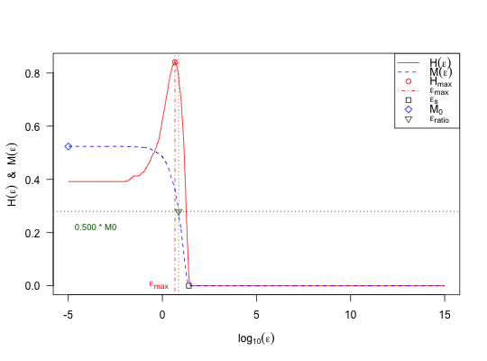

Creates a plot of the Information Content Features.
plotInformationContent(feat.object, control)
| feat.object | [ |
|---|---|
| control | [ |
[plot].
A plot visualizing the Information Content Features.
Possible control arguments are:
Computation of Information Content Features:
ic.epsilon: Epsilon values as described in section V.A
of Munoz et al. (2015). The default is
c(0, 10^(seq(-5, 15, length.out = 1000)).
ic.sorting: Sorting strategy, which is used to define
the tour through the landscape. Possible values are "nn"
(= default) and "random".
ic.sample.generate: Should the initial design be created
using a LHS? The default is FALSE, i.e. the initial design from
the feature object will be used.
ic.sample.dimensions: Dimensions of the initial sample,
if created using a LHS. The default is feat.object$dimension.
ic.sample.size: Size of the initial sample, if created
using a LHS. The default is 100 * feat.object$dimension.
ic.sample.lower: Lower bounds of the initial sample, if
created with a LHS. The default is 100 * feat.object$lower.
ic.sample.upper: Upper bounds of the initial sample, if
created with a LHS. The default is 100 * feat.object$upper.
ic.show_warnings: Should warnings be shown, when
possible duplicates are removed? The default is FALSE.
ic.seed: Possible seed, which can be used for making
your experiments reproducable. Per default, a random number will be
drawn as seed.
ic.nn.start: Which observation should be used as
starting value, when exploring the landscape with the nearest
neighbour approach. The default is a randomly chosen integer value.
ic.nn.neighborhood: In order to provide a fast
computation of the features, we use RANN::nn2 for computing
the nearest neighbors of an observation. Per default, we consider
the 20L closest neighbors for finding the nearest
not-yet-visited observation. If all of those neighbors have been
visited already, we compute the distances to the remaining points
separately.
ic.settling_sensitivity: Threshold, which should be
used for computing the “settling sensitivity”. The default
is 0.05 (as used in the corresponding paper).
ic.info_sensitivity: Portion of partial information
sensitivity. The default is 0.5 (as used in the paper).
Plot Control:
ic.plot.{xlim, ylim, las, xlab, ylab}: Settings of the
plot in general, cf. plot.default.
ic.plot.{xlab_line, ylab_line}: Position of xlab
and ylab.
ic.plot.ic.{lty, pch, cex, pch_col}: Type, width and colour
of the line visualizing the “Information Content” \(H(\epsilon)\).
ic.plot.max_ic.{lty, pch, lwd, cex, line_col, pch_col}:
Type, size and colour of the line and point referring to the
“Maximum Information Content” \(H[max]\).
ic.plot.settl_sens.{pch, cex, col}:
Type, size and colour of the point referring to the
“Settling Sensitivity” \(\epsilon[s]\).
ic.plot.partial_ic: Should the information of the partial
information content be plotted as well? The default is TRUE.
ic.plot.partial_ic.{lty, pch, lwd, cex, line_col, pch_col}:
Type, size and colour of the line and point referring to the
“Initial Partial Information” \(M[0]\) and the
“Partial Information Content” \(M(\epsilon)\).
ic.plot.half_partial.{pch, cex, pch_col}:
Type, size and colour of the point referring to the
“Relative Partial Information Sensitivity” \(\epsilon[ratio]\).
ic.plot.half_partial.{lty, line_col, lwd}_{h, v}:
Type, colour and width of the horizontal and vertical lines referring
to the “Relative Partial Information Sensitivity” \(\epsilon[ratio]\).
ic.plot.half_partial.text_{cex, col}:
Size and colour of the text at the horizontal line of the
“Relative Partial Information Sensitivity” \(\epsilon[ratio]\).
ic.plot.legend_{descr, points, lines, location}:
Description, points, lines and location of the legend.
Munoz, M. A., Kirley, M., and Halgamuge, S. K. (2015): “Exploratory Landscape Analysis of Continuous Space Optimization Problems Using Information Content”, in: IEEE Transactions on Evolutionary Computation (19:1), pp. 74-87 (http://dx.doi.org/10.1109/TEVC.2014.2302006).
# (1) create a feature object: X = t(replicate(n = 2000, expr = runif(n = 5, min = -10, max = 10))) feat.object = createFeatureObject(X = X, fun = function(x) sum(x^2)) # (2) plot its information content features: plotInformationContent(feat.object)